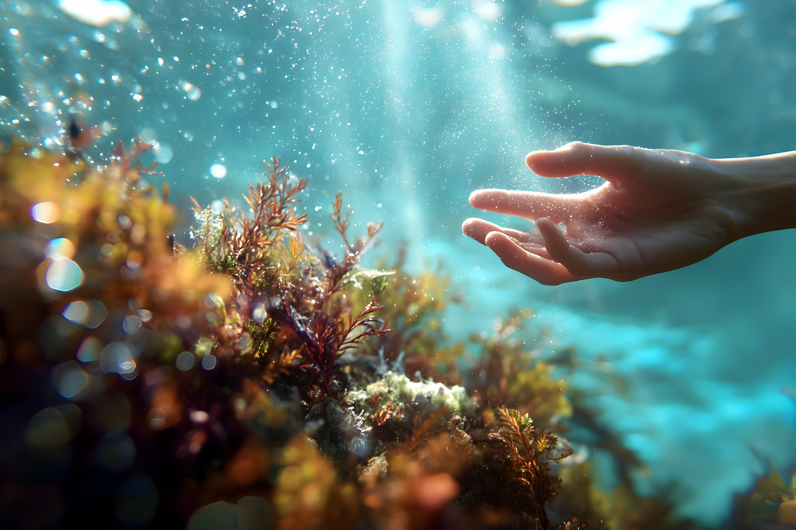

Humans are the cause
There are many endangered species in the ocean more than 100,000 species are threatened with extinction. And many of them are already extinct due to human activities such as overfishing, habitat destruction, and pollution.

Source: iStock
😮 What are Coral Reefs?
Coral reefs are massive underwater structures built by tiny sea animals called coral polyps. Although they cover less than 1% of the ocean floor, they support about 25% of all marine life. These reefs act like apartment complexes for ocean creatures, providing essential food, shelter, and breeding grounds.
😱 Why Are They Called Underwater Cities?
Much like cities on land, coral reefs are complex communities where every organism has a role. There are residents like fish and mollusks, builders like corals, cleaners such as shrimp and certain fish, and predators that keep the ecosystem balanced. The bustling schools of fish moving through the reef are like rush hour traffic in a city.
.jpg)
😇 Why Are Coral Reefs Important?
Coral reefs are vital for protecting coastlines from storms and erosion, and they provide food and income for over 500 million people worldwide. They are also crucial for medicine, as many treatments are derived from reef organisms. As biodiversity hotspots, coral reefs are even more diverse than rainforests.
😨 Threats to Coral Reefs
Coral reefs face serious threats from climate change, which causes coral bleaching and loss of life. Pollution, overfishing, and irresponsible tourism also damage these delicate ecosystems. Without action, most reefs could disappear within our lifetime.
.jpg)
😍 How Can We Help?
We can help coral reefs by reducing plastic and chemical waste, supporting reef-friendly products and tourism, and raising awareness—every small action makes a difference.
